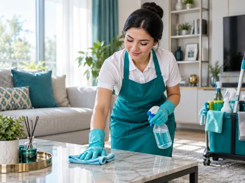

Divandagi dog‘ni chuqurlashtirib yubormaslik uchun 5 qoida
Mato turini tekshirmasdan kimyo ishlatish nimaga xavfli va mutaxassis kelguncha nima qilish mumkin.
Mebel tozalash xizmatini ko‘rish →Uy, mebel va tijorat obyektlarini toza saqlashga yordam beradigan amaliy qo‘llanmalar.
Mato turini tekshirmasdan kimyo ishlatish nimaga xavfli va mutaxassis kelguncha nima qilish mumkin.
Mebel tozalash xizmatini ko‘rish →Vosita, latta va quritish yo‘nalishini to‘g‘ri tanlash orqali oynada qoladigan izlarni kamaytiring.
Oyna yuvish xizmatini ko‘rish →
Oddiy yig‘ishtirish yetmay qolganini ko‘rsatadigan belgilar va ish hajmini oldindan baholash.
General tozalashni ko‘rish →